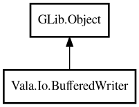

BufferedWriter
Object Hierarchy:

Description:
public class BufferedWriter : Object
BufferedWriter provides buffered character-output-stream writing. It wraps a GLib.DataOutputStream and offers convenient methods for
writing strings and lines, similar to Java's BufferedWriter.
Example:
var writer = BufferedWriter.fromFile (new Path ("/tmp/out.txt"));
writer.writeLine ("Hello");
writer.writeLine ("World");
writer.close ();
Content:
Static methods:
- public static BufferedWriter? fromFile (Path path)
Creates a BufferedWriter that writes to a file, replacing any existing
content.
- public static BufferedWriter? fromFileAppend (Path path)
Creates a BufferedWriter that appends to an existing file, or creates
the file if it does not exist.
Methods:
- public void close ()
Closes the underlying stream. After closing, all write operations
return false.
- public bool flush ()
Flushes the stream, writing any buffered data.
- public bool newLine ()
Writes a newline to the stream.
- public bool write (string s)
Writes a string to the stream.
- public bool writeLine (string s)
Writes a string followed by a newline to the stream.
Inherited Members:
All known members inherited from class GLib.Object
- @get
- @new
- @ref
- @set
- add_toggle_ref
- add_weak_pointer
- bind_property
- connect
- constructed
- disconnect
- dispose
- dup_data
- dup_qdata
- force_floating
- freeze_notify
- get_class
- get_data
- get_property
- get_qdata
- get_type
- getv
- interface_find_property
- interface_install_property
- interface_list_properties
- is_floating
- new_valist
- new_with_properties
- newv
- notify
- notify_property
- ref_count
- ref_sink
- remove_toggle_ref
- remove_weak_pointer
- replace_data
- replace_qdata
- set_data
- set_data_full
- set_property
- set_qdata
- set_qdata_full
- set_valist
- setv
- steal_data
- steal_qdata
- thaw_notify
- unref
- watch_closure
- weak_ref
- weak_unref